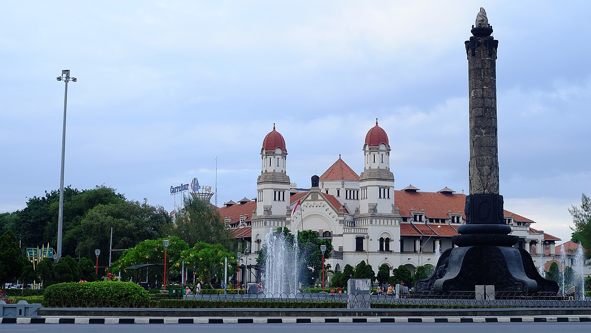

Sejarah
Kota Semarang (bahasa Jawa: ꦏꦸꦛꦱꦼꦩꦫꦁ, translit. Kuṭå Sěmarang, Pegon: سماراڠ) adalah ibu kota Provinsi Jawa Tengah, Indonesia. Kota ini sekaligus menjadi Kota metropolitan terbesar kelima di Indonesia setelah Jakarta, Surabaya, Medan, dan Bandung. Sebagai salah satu kota paling berkembang di Pulau Jawa, Kota Semarang mempunyai jumlah penduduk sekitar 1,6 juta jiwa. Kawasan mega-urban Semarang yang tergabung dalam wilayah metropolitan Kedungsepur (Kendal, Demak, Ungaran, Kabupaten Semarang, Kota Salatiga, Kota Semarang dan Purwodadi, Kabupaten Grobogan) berpenduduk mencapai 7,3 juta jiwa, sekaligus sebagai wilayah metropolitan terpadat keempat di Pulau Jawa, setelah Jabodetabek (Jakarta), Gerbangkertosusilo (Surabaya), dan Bandung Raya. Dalam beberapa tahun terakhir, perkembangan Semarang yang signifikan ditandai pula dengan munculnya beberapa gedung pencakar langit yang tersebar di penjuru kota. Perkembangan regional ini menunjukan peran strategis Kota Semarang terhadap roda perekonomian nasional.
Kota Semarang dipimpin oleh wali kota Dr. Hendrar Prihadi, S.E, M.M dan wakil wali kota Ir. Hj. Hevearita Gunaryanti Rahayu M.Sos. Kota ini terletak sekitar 558 km sebelah timur Jakarta, atau 312 km sebelah barat Surabaya, atau 621 km sebalah barat daya Banjarmasin (via udara). Semarang berbatasan dengan Laut Jawa di sebelah utara, Kabupaten Demak di sebelah timur, Kabupaten Semarang di sebelah selatan, dan Kabupaten Kendal disebelah barat. Kota Semarang memiliki luas wilayah administratif sebesar 373,70 km persegi, sekaligus merupakan administrasi kotamadya terluas di Pulau Jawa.
Secara etimologis, nama "Semarang" berasal dari kata "sem", yang berarti "asam/pohon asam", dan kata "arang", yang berarti "jarang", yang digabungkan menjadi "asam yang jarang-jarang". Penamaan "Semarang" ini bermula ketika Ki Ageng Pandanaran I datang ke sebuah pulau bernama Pulau Tirang (dekat pelabuhan Bergota) dan melihat pohon asam yang jarang-jarang tumbuh berdekatan. Penamaan Kota Semarang ini sempat berubah saat zaman kolonialisme Hindia Belanda menjadi "Samarang". Kota Semarang merupakan satu dari tiga pusat pelabuhan (Jakarta dan Surabaya) penting bagi Hindia Belanda sebagai pemasok hasil bumi dari wilayah pedalaman Jawa.
Seperti kota besar lainya, Kota Semarang mengenal sistem pembagian wilayah kota yang terdiri atas: Semarang Tengah atau Semarang Pusat, Semarang Timur, Semarang Selatan, Semarang Barat, dan Semarang Utara. Pembagian wilayah kota ini bermula dari pembagian wilayah sub-residen oleh Pemerintah Hindia Belanda yang setingkat dengan kecamatan. Namun saat ini, pembagian wilayah kota ini berbeda dengan pembagian administratif wilayah kecamatan. Meskipun pembagian kota ini jarang dipergunakan dalam lingkungan Pemerintahan Kota Semarang. Namun pembagian kota ini digunakan untuk mempermudah dalam menerangkan suatu lokasi menurut letaknya terhadap pusat kota Semarang. Pembagian kota ini juga digunakan oleh beberapa instansi di lingkungan Kota Semarang untuk mempermudah jangkauan pelayanan, seperti PLN dan PDAM.